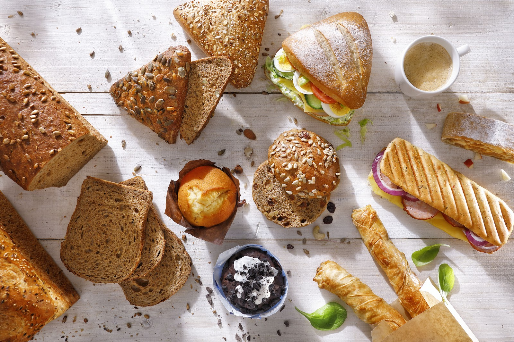
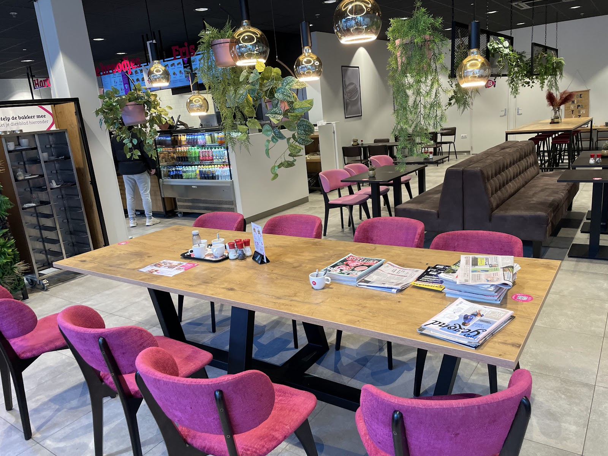
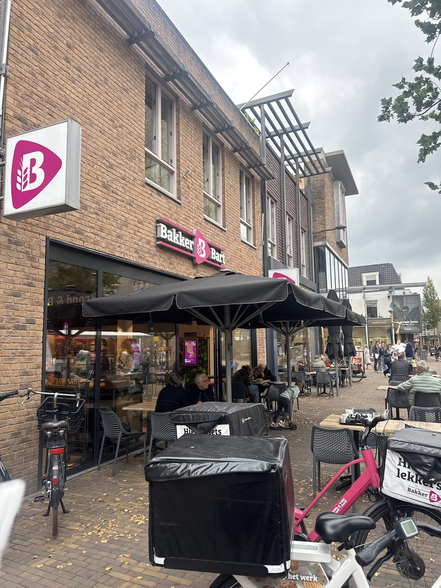
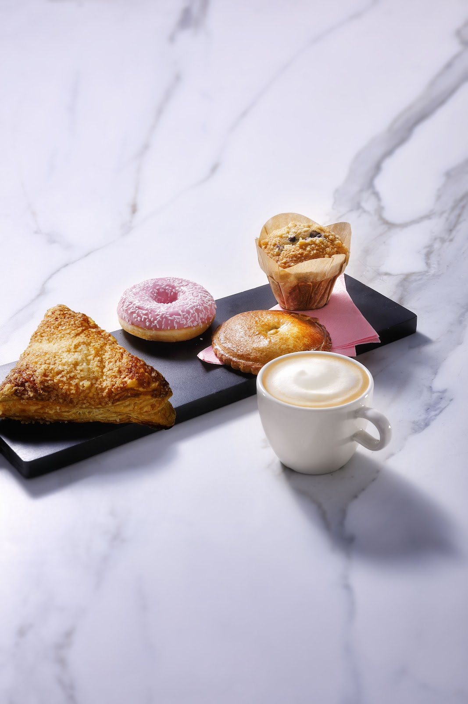
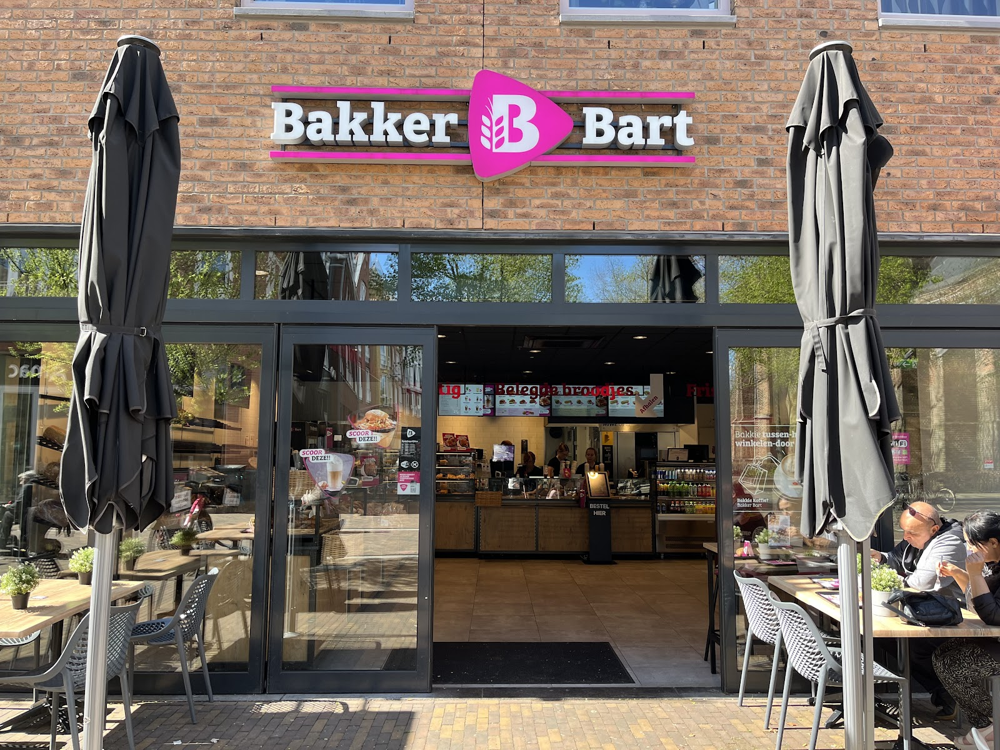

Grotestraat 73, Ede
Vers belegd, aan de Grotestraat.
Broodjes, warme panini's en dubbeldikke tosti's. Even binnen zitten met koffie, op het terras, of meenemen voor onderweg.
Ma t/m vr 8.00 tot 17.30, zaterdag 8.00 tot 17.00

Op de kaart
26 belegde broodjes
Binnen aan de grote tafel, of buiten onder de parasol
Midden in het centrum van Ede. Neem de krant erbij aan de lange tafel, schuif aan op de bank, of zoek een plek op het terras aan de Grotestraat.



En iets lekkers bij de koffie
Een flap, een muffin, een koek of een croissant. Voor bij de cappuccino aan tafel, of in een zakje mee naar kantoor. Brood en bollen voor thuis haalt u hier ook.
Bestel voor afhalen of bezorgenLangskomen
Bakker BartGrotestraat 73
6711 AJ Ede

| Maandag | 8.00 tot 17.30 |
| Dinsdag | 8.00 tot 17.30 |
| Woensdag | 8.00 tot 17.30 |
| Donderdag | 8.00 tot 17.30 |
| Vrijdag | 8.00 tot 17.30 |
| Zaterdag | 8.00 tot 17.00 |
| Zondag | Gesloten |